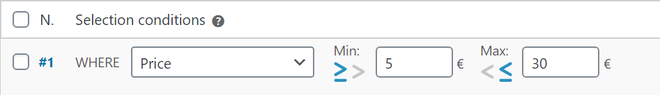

15 métodos de selección condicionales en las reglas de envío

Fish and Ships para WooCommerce trae una amplia colección de métodos de selección, estos son:
Precio: |
Se tendrá en cuenta el precio de los productos antes de impuestos. Si están rebajados, se tomará ese precio. |
Peso: |
Si los productos no tienen peso establecido, el valor a considerar será 0. |
Volumen: |
El valor a considerar será la multiplicación de Ancho x Alto x Largo. Si no tiene medidas introducidas, el valor será 0. |
Núm. productos cesta: |
Se considerará la cantidad de productos en la cesta. ¡Ten en cuenta que el método de agrupación puede generar confusión! Si eliges no agrupar los productos y considerarlos uno a uno, el valor a considerar será siempre 1 (ver agrupar-por). |
Dimensión mínima, |
Cada uno de ellos, considerará, respectivamente, la cota mínima, media y máxima de los productos. Es indiferente si las medidas han estado entradas de pequeño a grande, o de grande a pequeño, en un producto de: 10x15x1 o 15x1x10, la medida grande será siempre 15, la media 10, y la pequeña 1. Este método considera siempre los productos uno a uno, independientemente del método de agrupación elegido. Si un producto no tiene entradas sus medidas, el valor a considerar será cero. |
Largo+Ancho +Alto [PRO]: |
El valor a considerar será la suma de las cotas. En un producto de: 10x15x1, será: 10+15+1 = 26. Este método considera siempre los productos uno a uno, independientemente del método de agrupación elegido. Si un producto no tiene entradas sus medidas, el valor será cero. |
User role [PRO]: |
Get more info here. |
Mayor que / Mayor o igual que & Menor que / Menor o igual que
Todos los métodos de: dimensiones, peso, volumen, precio y número de productos en la cesta, despliegan unos campos de valor mínimo y máximo.
Para todos estos criterios, puedes seleccionar cómo los valores MIN y MAX serán comparados, pudiendo escojer para cada regla el símbolo que se requiera.
En la siguiente tabla, hemos establecido la comparación MIN como MAYOR O IGUAL QUE 5€, y la comparación MAX como MENOR O IGUAL QUE 30€:

| 4.99€ | 5.00€ | 30.00€ | 30.01€ |
En la segunda tabla, hemos establecido la comparación MIN como MAYOR QUE 30€, y la comparación MAX como MENOR QUE 100€, así que: los valores iguales no cumpliran con esta regla:

| 30.00€ | 30.01€ | 99.99€ | 100.00€ |
Nota que 30.00€ cumple la regla #1 porque el campo MAX hace la comparación MENOR O IGUAL QUE, y no cumple la regla #2 porque MIN hace la comparación con MAYOR QUE.
Por otro lado, 100€ no cumple la regla #2 porque el campo MAX hace la comparación MENOR QUE.
En la categoría, |
Se tienen en cuenta las categorías de producto especificadas (product categories), y no sus categorías hijas. Si quieres que sean consideradas, deberás incluirlas también. |
Etiquetado (tagged) como, |
Se tienen en cuenta las etiquetas de producto (product tags). |
En la clase de envío, |
Se tienen en cuenta las clases de envío (shipping classes). |
Volumétrico [PRO]: |
Con el selector de peso volumétrico se realiza un doble cálculo: por peso y por volumen, y se toma el valor más alto. Al seleccionar peso volumétrico, aparece debajo de la tabla de reglas un nuevo campo, para que introduzcamos el factor de peso volumétrico, que debes obtener de la agencia de transporte: |

¿Cómo funciona? Imagina un factor de peso volumétrico de 50 quilos por metro cúbico. La tienda de nuestro ejemplo está configurada para trabajar en centímetros y gramos, convertido, es: 0.05 gramos por centímetro cúbico, (aquí tienes un conversor de unidades online para volumen/peso):
| Producto | Peso | Medidas | Volumen | Peso volumétrico | Valor a considerar |
|---|---|---|---|---|---|
| Abrigo | 1500 g. | 50x50x14 cm | 35000 cm3 | 35000 * 0.05 = 1750 g. |
1750 g. |
| Portátil | 2500 g. | 40x46x18 cm | 33120 cm3 | 33120 * 0.05 = 1656 g. |
2500 g. |
En los productos ligeros, el valor a considerar será el peso volumétrico calculado. En los productos pesados, será considerado el peso real del producto. Siempre el de mayor valor.
¿Y... ahora?
Acabamos de ver los métodos de selección. Ahora, aprendiendo cómo funcionan los cálculos de costes ya podrás hacer un uso básico de Fish and Ships: